Préparer le VHD
Cette partie du guide est facultative, car vous pourriez tout simplement installer le système Windows directement sur la seconde partition que nous avons créee précédemment et tout fonctionnera normalement.
L'utilisation d'un VHD est cependant tout de même pertinente surtout dans le cas d'une installation sur un périphérique amovible, en voici certains avantages.
Déploiement, sauvegardes et restaurations simples : Un VHD est un fichier image qui contient l'entièreté du système Windows 10, il suffit de le copier ailleurs pour en faire une sauvegarde. Il en va de même pour restaurer ou faire du déploiement sur plusieurs périphériques amovibles. Note que dans certains cas, la partition EFI doit être créer pour que le démarrage fonctionne.
Isole Windows sur le périphérique amovible : Intéressant si vous voulez utiliser par exemple votre clé USB pour autre usage que démarrer sur Windows 10. Le seul fichier que vous allez voir sur la clé USB est l'image du VHD, vous ne serez pas embarrassé par les milliers de fichiers du système.
La première étape consiste à créer le fichier image du disque dur virtuel au format VHD. Ce dernier est supporté par Microsoft, donc on le retrouve intégré à l'environnement de Windows. Pour créer un VHD, nous avons deux options, soit par le gestionnaire de disques ou bien en ligne de commandes. Ici, nous allons procéder par le gestionnaire de disques. Avant de créer le disque virtuel, nous devons calculer sa taille par rapport à l'espace disponible sur la partition «Datastore» (la seconde que nous avons crée dans la partie 2). Si on fait un clique-droit sur le volume «Datastore» H:/ puis «Propriétés», nous allons voir les informations sur l'espace libre.
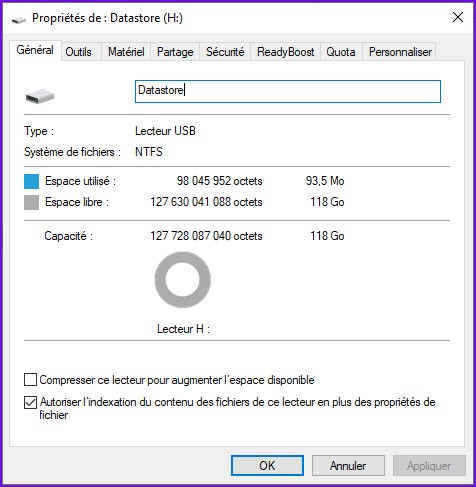Nous avons exactement 127 630 041 088 octets d'espace libre sur notre partition. Idéalement, nous souhaitons que notre fichier VHD occupe au maximum possible l'espace libre de cette partition si le périphérique amovible va être utilisé seulement pour Windows to go.
On commence par calculer l'espace libre total en Mo, car nous pouvons seulement choisir une taille de disque virtuel en Mo ou en Go.
127 630 041 088 octets / 1024 /1024 = 121 717 Mo libres.
Il est fortement recommandé de conserver au minimum un 2 Go de libre sur la partition, d'un coup qu'il y aurait augmentation imprévue de la taille du disque virtuel et ou autres données inscrites par le système d'exploitation.
Si vous voulez choisir une taille en Go, simplement multiplier celle-ci par 1 024 et s'assurer que la valeur en Mo obtenue soit plus petite de 2 048 Mo que la taille en Mo calculée ci-haut.
Ici, j'aimerais que mon disque virtuel ait 116 Go, donc je fais ceci.
116 Go * 1024 = 118 784 Mo
Il restera alors 121 717 Mo - 118 784 Mo = 2 933 Mo d'espace disponible sur la partition après la création du disque virtuel.
La taille de notre disque sera donc de 118 784 Mo. Pour créer ce disque virtuel, retourner dans le gestionnaire de disque Windows.
Dans celui-ci, il suffit simplement de cliquer sur «Autres actions» dans le menu à droite, puis faire «Créer un disque dur virtuel».
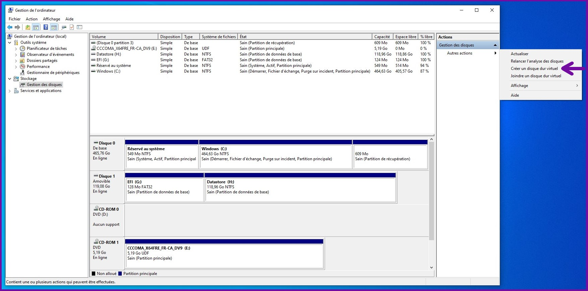La fenêtre de création d'un disque virtuel apparaît alors. Commencer par entrer la taille choisie en Mo.
Ensuite, pour le format du disque virtuel, il y a deux choix possibles soit le VHD ou le VHDX. Pour une installation de Windows 10, choisir tout simplement VHDX. Ce format est la version améliorée du VHD standard et propose de nombreux avantages tels que le support d'une plus grande capacité et surtout une meilleure résistance aux pannes (très intéressant surtout sur un périphérique amovible).
Pour le type du disque virtuel, nous avons deux choix.
La taille fixe fera en sorte que le fichier image occupera par exemple les 118 784 Mo au départ, même si rien n'est écrit sur le disque. L'espace est réservée d'avance.
L'extension dynamique crée un petit fichier image de quelques Mo, mais celui-ci augmentera de taille au fur et à mesure que des données seront écrites.
Choisir la taille fixe, même si l'extension dynamique est recommandée pour éviter les surprises surtout si vous avez fait erreur dans le calcul de la taille maximale.
Finalement, l'emplacement où sera stocké le fichier en cliquant sur le bouton «Parcourir». Choisir le lecteur H:/ qui est la partition «Datastore».
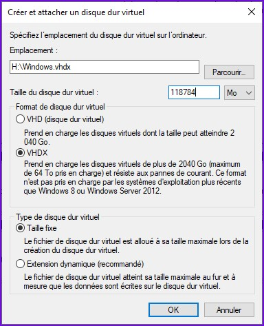Cliquer ensuite sur le bouton «OK» pour lancer le processus de création du disque virtuel. Celui-ci peut prendre plusieurs heures selon la taille choisie et la vitesse d'écriture du périphérique amovible. La progression en pourcentage est affichée en bas à droite de la fenêtre du gestionnaire de disque.
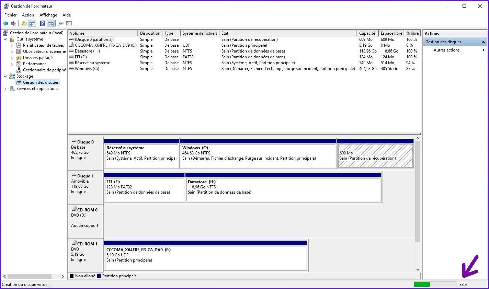Une fois le processus terminé, le nouveau disque virtuel sera automatiquement attaché. Celui-ci est non-initialisé tout comme un disque dur physique neuf.
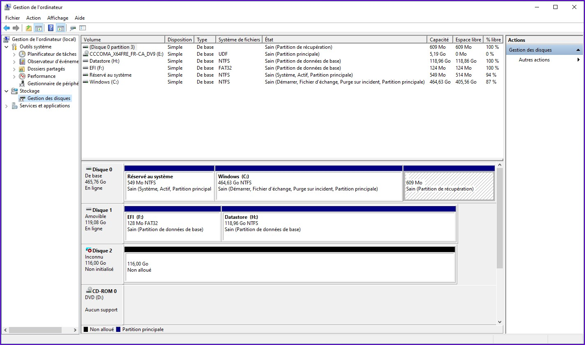Initialiser un disque signifie de créer une nouvelle table de partition. Faire clique-droit sur le disque virtuel nouvellement attaché (disque 2) puis choisir «Initialiser le disque».
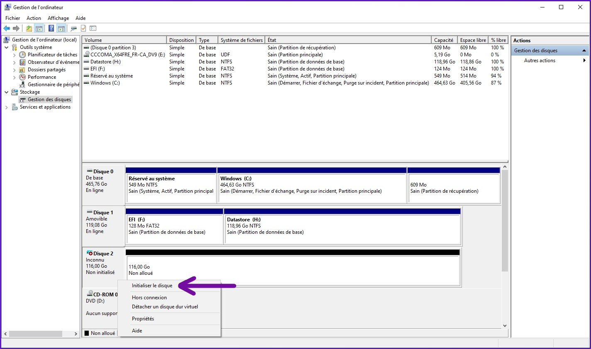La fenêtre d'initialisation de disques s'ouvre et deux choix s'offrent à nous, MBR ou bien GPT. Choisir GPT, car notre périphérique amovible est déja obligatoirement en GPT et que c'est très bien supporté par Windows 10. Il n'y a aucun avantage de choisir MBR dans ce cas. Cliquer ensuite sur «OK».
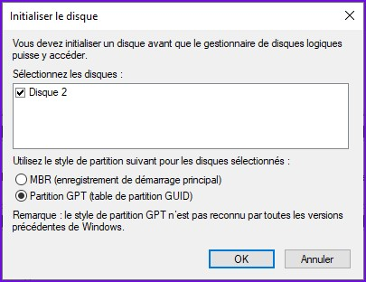Une fois initialisé, il est maintenant possible de créer une ou des partitions sur le disque virtuel. Nous allons en créer une seule pour le système Windows. Clique-droit sur l,espace non-alloué, puis faire «Nouveau volume simple».
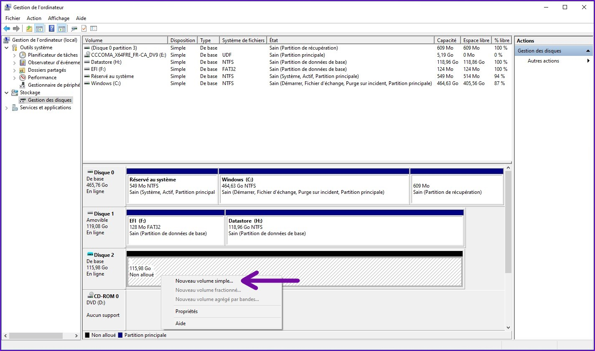Tel qu'effectué dans la partie précédente, il s'agit ensuite de suivre l'assistant de création d'un nouveau volume simple. Cliquer sur le bouton «Suivant».
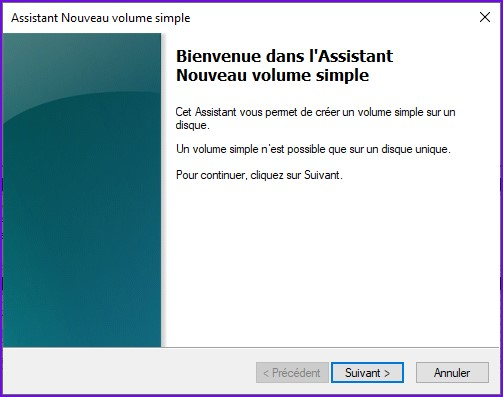Prendre tout l'espace possible pour la nouvelle partition, c'est la seule que nous aurons à créer sur ce disque.
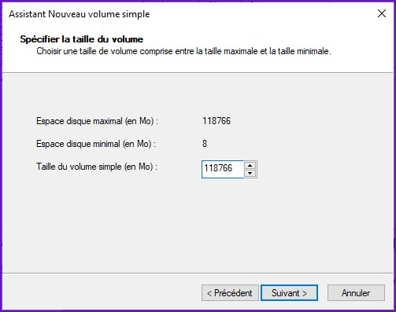Sélectionner le chemin pour le lecteur, n'importe quelle lettre libre fera l'affaire. Je choisis G:/ pour la partition Windows sur le VHD. Faire ensuite «Suivant» pour continuer.
Note : Dans la partie précédente, j'avais déja attribué la lettre G:/ pour la partition EFI, mais celle-ci s'est changée pour F:/ suite à un redémarrage de mon ordinateur.
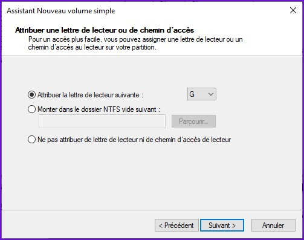À l'écran de formatage, choisir les options suivantes.
- Système de fichiers : NTFS
- Taille d'unité d'allocation : Par défaut
- Nom de volume : Windows
Vérifier qu'il n'y a pas d'erreurs dans les options choisies, puis faire «Terminer» pour fermer l'assistant.
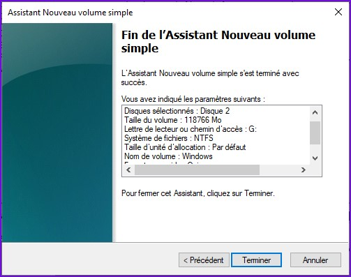Après quelques secondes, la partition Windows sera crée. Voici un aperçu de la configuration des disques que vous devriez avoir à cette étape-ci du guide.
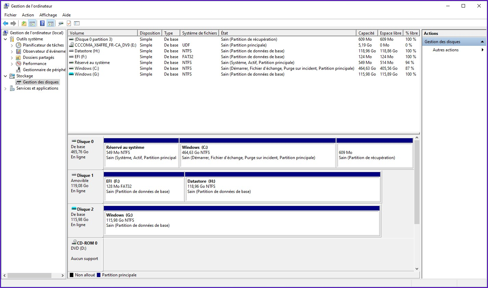Si l'on va faire un tour dans l'explorateur Windows, ça devrait ressembler à ceci.
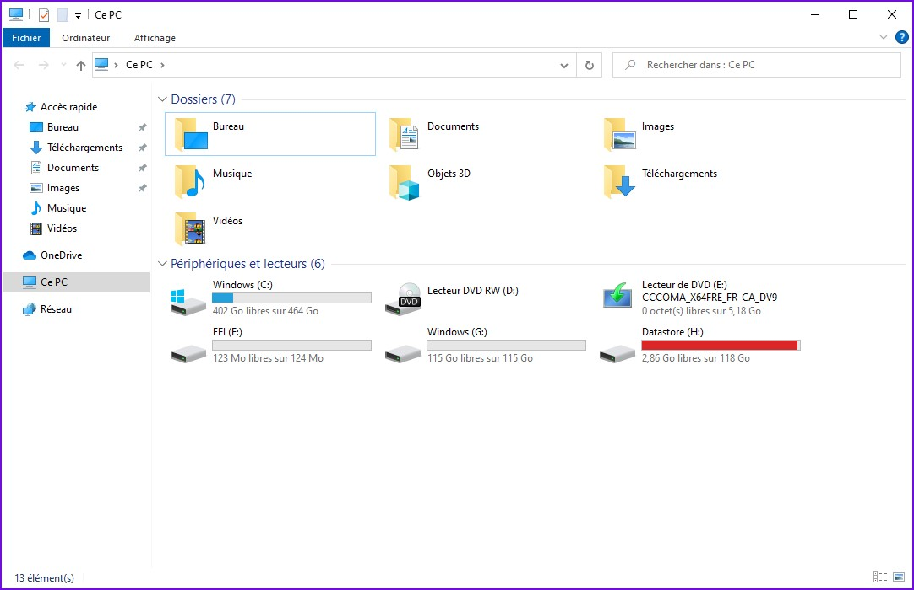Note : Il est tout à fait normal que la partition «Datastore» soit presque pleine, puisque notre fichier de disque virtuel en taille fixe y occupe cet espace.
Le VHD est maintenant prêt à acceuillir le système d'exploitation Windows. La quatrième partie de ce guide portera sur l'installation de celui-ci.